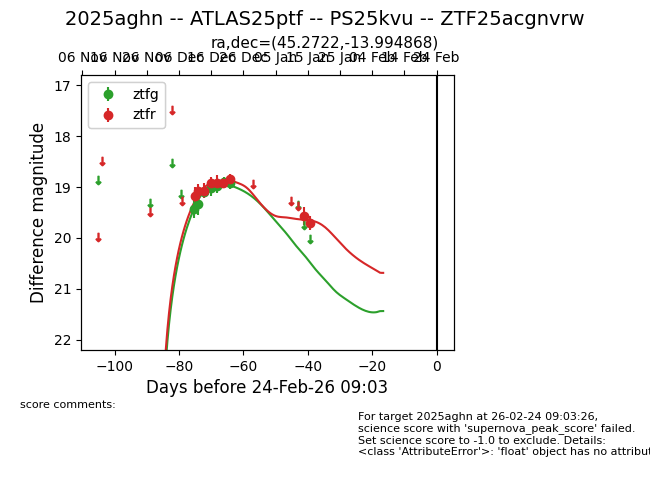
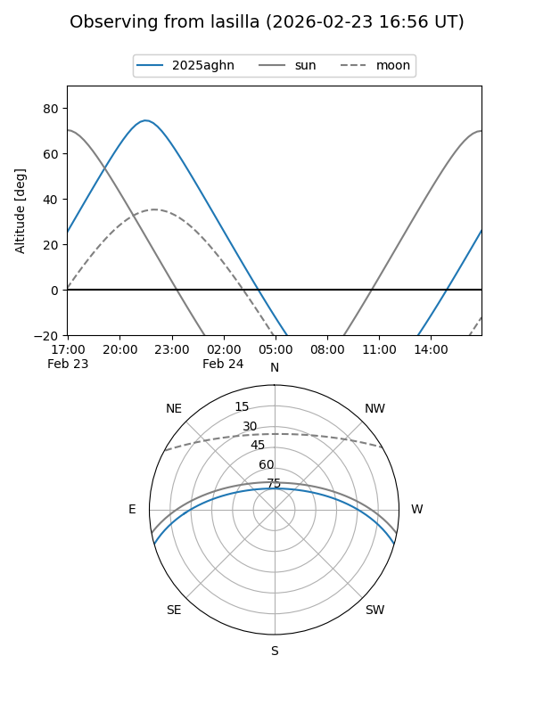
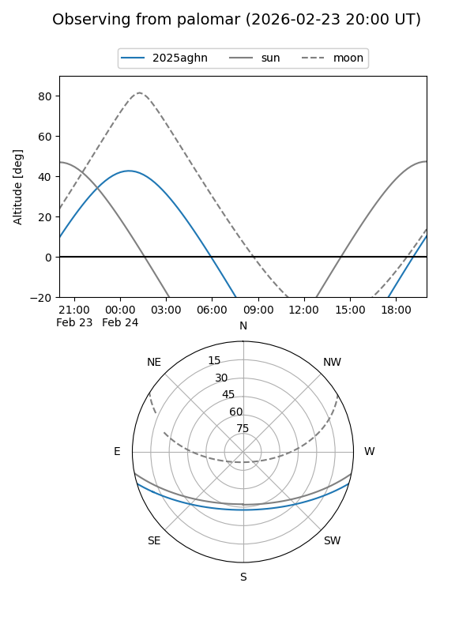
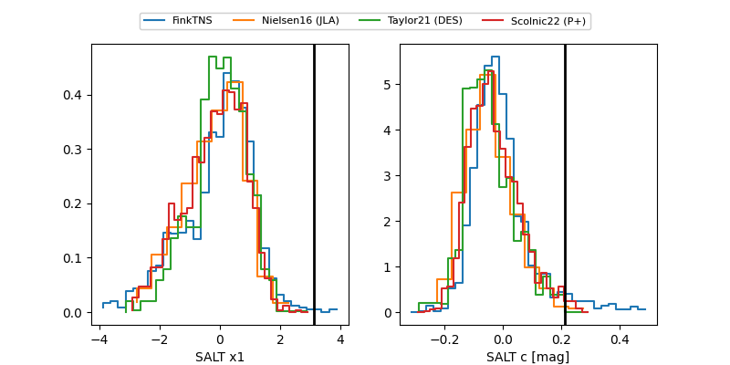

2025aghn
Target 2025aghn at 2025-12-24 16:20
Aliases and brokers:
FINK: fink-portal.org/ZTF25acgnvrw
Lasair: lasair-ztf.lsst.ac.uk/objects/ZTF25acgnvrw
ALeRCE: alerce.online/object/ZTF25acgnvrw
TNS: wis-tns.org/object/2025aghn
YSE: ziggy.ucolick.org/yse/transient_detail/2025aghn
alt names
ZTF25acgnvrw (ztf,fink_ztf)
2025aghn (tns,yse)
Coordinates:
equatorial (ra, dec) = 45.2723,-13.99485
equatorial (HMS+DMS) = 03:01:05.34,-13:59:41.46
galactic (l, b) = (196.0048,-57.06696)
Flags:
Photometry:
last atlasc=18.70, atlaso=19.02, ztfg=18.92, ztfr=18.84
4 atlasc, 3 atlaso, 7 ztfg, 7 ztfr detections
Lightcurve

Visibility


Additional plots
